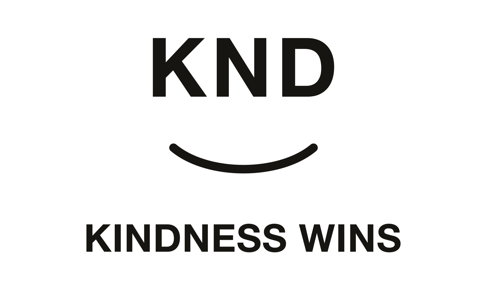
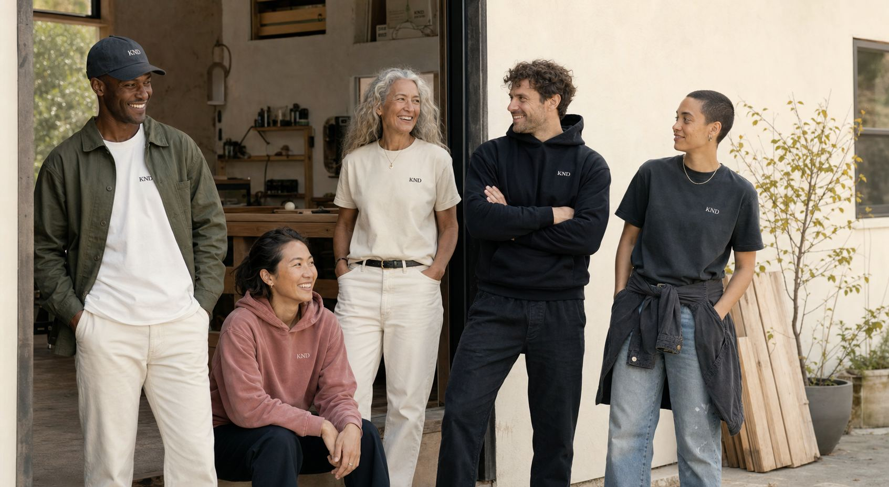
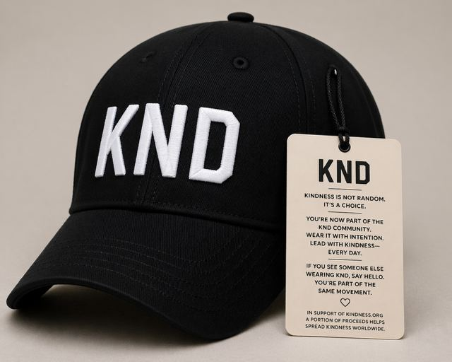
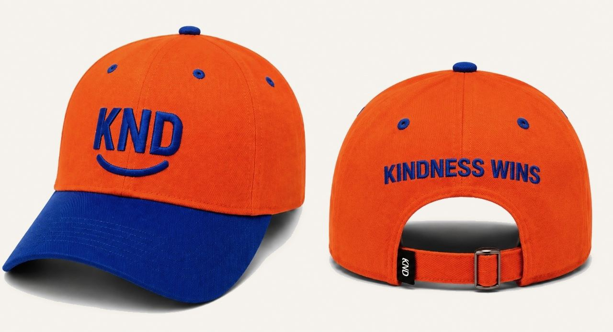

01 / KND
BRAND DIRECTION
Kindness has a smile now.
A mark that feels simple at first glance, then warmer the longer you sit with it.

LOGO ARCHIVE
A small family of marks with one clear emotional center.
02 / KND Square Period

03 / Kindness Wins Smile

The strength of KND is that people understand it before it has to explain itself.
The smile gives that recognition somewhere to land.
It makes the brand feel open, generous, and ready to be worn.
PHOTOGRAPHY ARCHIVE
Premium, coherent, and human enough to feel like a community people recognize.




